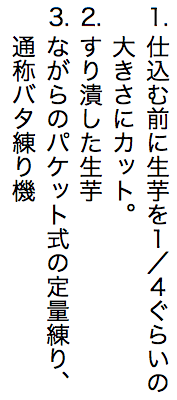

How to make list markers stand upright in vertical text
In Chinese, Japanese, Korean, and Mongolian vertically-set text it is normal for list counters to sit upright above the start of the list.

Until recently this was problematic, because browsers would only show the numbers lying on their side. This article describes how to make them stand upright as shown in the picture above, and the currently remaining issues. It is only concerned with lists used in vertical text; lists used in horizontal text are likely to use different counter styles.
Details
We'll look at three alternative approaches, one of which works across all major browser engines, another which doesn't currently work with WebKit browsers, and a third that doesn't yet work with any major browser.
Use counter-styles & upright characters
The simplest approach is to use counters that are always upright in vertical text.
Customised counter-styles are now supported by all major browser engines. This therefore provides an opportunity that will lead to an interoperable solution.
First, you need to create an @counter-style declaration in your CSS. We suggest a circled decimal style below, but as these are customisable you can also make up your own.
This counter style definition is taken from Ready-made Counter Styles, where you can find several alternative styles that may be of interest. The suffix is still specified, to avoid the default full stop appearing, but is reduced to a null string to avoid harmful effects on the horizontal positioning.
Note that this particular counter style is of the “fixed” type. This means that it only supports lists containing up to 50 items. Other similar styles may support fewer counters. This is probably not problematic for most lists in vertical text.
Once you have added this counter-style definition to your CSS, then tie it to your list using CSS code such as the following. You can, of course, add a class name or context to your element selector, if you want to apply the style to just certain lists.
li { list-style-type: circled-decimal; }
Output in your browser:
仕込む前に生芋を１／４ぐらいの大きさにカット。
すり潰した生芋
ながらのパケット式の定量練り、通称バタ練り機
Styling the counter using ::marker
Many horizontal counter styles use simple digits or alphabetic characters as counters, but in vertical text this will result in a counter lying on its side. Here we look at how to prevent that, using ordinary decimal counters. This would enable you to have lists longer than those described above, but it's necessary to take one or two extra steps to ensure that the counter is upright and is properly centred above the vertical line.
We use a counter-style rule to remove the dot and space that follow decimal counters by default. (To make the counter look like "1.", "2,", etc. just set the suffix to ".".) We then use CSS's ::marker pseudo-element to make the counter stand upright above the line.
Here's the result in your browser. It works in Blink and Gecko browsers, but it doesn't work at all in WebKit browsers, so it's not a fully interoperable solution (at least not yet).
Output in your browser:
仕込む前に生芋を１／４ぐらいの大きさにカット。
すり潰した生芋
ながらのパケット式の定量練り、通称バタ練り機
The example above shows the basic mechanics, but it could do with some additional styling to look right.
Mixing vertical & horizontal in markers
Another common style of counters looks like the following.
The basic principle for creating this style is the same as previously described, but with a twist, because we need to allow the parentheses to rotate but keep the digit(s) upright.
In theory, we just need to use a different value for text-combine-upright.
Unfortunately, this is only a theoretical solution for the time being, because no browser yet supports the digits value.
@counter-style upright-decimal {
system: extends decimal; /* same as before */
suffix: '';
}
li {
list-style-type: upright-parens; /* same as before */
}
li::marker {
text-combine-upright: digits; /* changed */
}
The digits value seeks out digits within a string and makes them horizontal while leaving the surrounding text vertical. (The syntax shown should work for any 2-digit number. If you ever need to go higher than that, just use digits 4 to allow for numbers up to 9,999.)
Using more CSS to tweak the presentation
Both types of list described above can benefit from additional styling. For example, using the following CSS we can make the markers in the example just above slightly bigger, and coloured, and we can create an appropriately sized gap between the counter and the list text. (Some of these things are slightly unusual, but they serve as a demonstration of what's possible.)
We'll also change the counter to have parentheses around it. Note how the browser squeezes the result to fit within a line.
The CSS specification indicates that it is possible to apply various adjustments to the ::marker pseudo-element, including the following examples:
all font properties
the white-space property
color
text-combine-upright, unicode-bidi, and direction
the content property
all animation and transition properties
The above properties are supported by Gecko and Blink browsers, but WebKit browsers don't support all of them, including, as we have seen, text-combine-upright. On the other hand, some browsers may support additional CSS properties, but these extra styling options may not be as interoperably rendered. (Test for some styles in your browser.)
List layout
The layout of the list items and the list box can be managed using CSS properties. Here we provide some illustrations.
Example 1
The following CSS code produces a layout similar to example 249 in the JLReq document. In JLReq this example has the rotated parentheses in its markers, but since that can't currently be achieved in browsers we will use simple upright parentheses here.
We want the list counters to have a 2-character gap above them. Note, however, that we give the top of the list box (ol) an offset of 3em because this determines the distance to the beginning of the list text, rather than the list markers).
In the previous section the example applied a gap between the list markers and the list text so that the start of each item of list text was flush. This was achieved by setting initial padding on the li element.
The example we are emulating in this section is a little more complicated. In typical Japanese style, each paragraph, including each item of list text, has a 1-character gap at the beginning of its initial line. This is achieved using text-indent.
Example 2
In the next illustration the counter appears lower than the top of the list text. The CSS for this is slightly trickier than the previous example. Again, we use non-rotated parens, but when the digits value is supported we could use rotated parentheses.
At the time of writing, this layout is not achievable in Blink browsers such as Chrome (although it falls back to something acceptable). It does work in WebKit (Safari) and Gecko (Firefox) browsers. However, WebKit browsers don't yet rotate the digits, of course, so as long as your list is not very long an alternative might be to use counters such as ⑴, ⑵, etc. which are always upright. See how it looks in Firefox.
This time we use a hanging text indent that is balanced using margin-inline-start to produce the layout we want. A small amount inline padding separates the counter from the following text, and that has to be factored in to the text-indent calculation.
Example 3
In this illustration the list is indented by one em, and the counter by another em. The counter is followed by a one em gap. A significant difference here is that the counters themselves can grow in length, but they always start from the same position. (To illustrate what this looks like, we manually set the numbering for this example to show different lengths of counter.)
The counters are based on the trad-chinese-informal style, which uses one or more ideographic characters, followed by an ideographic comma, and which is supported by the browser without the need for an @charset declaration. Since these are ideographic characters, we don't need to use text-combine-upright to keep them upright. To support the growth of the counter without changing the start position, we set list-style-position to inside.
So far, so good, but adding a gap after the counter is a little more tricky. Because li::marker doesn't support margins or padding, we need to use a workaround that extends the counter style, adding an ideographic space to the counter suffix.